18/11/2018 — Bác sĩ nội trú năm nhất có đúng không?
Bản dịch tiếng Việt của bài "Was the intern correct?" – Dr. Smith’s ECG Blog. Giữ nguyên toàn bộ 20 hình ảnh của bản gốc.
Bài viết của Pendell Meyers, ca bệnh do Max Macbarb gửi, Steve Smith biên tập
Một người đàn ông 71 tuổi có tiền sử bệnh động mạch vành (CAD) và can thiệp mạch vành qua da (PCI) đến viện vì đau ngực cấp, các dấu hiệu sinh tồn bình thường. Ông được phân loại vào khu vực chung của khoa cấp cứu sau khi một bác sĩ nội trú năm trên hoặc bác sĩ điều trị chính xem sơ bộ điện tâm đồ này và đọc đúng là “Không có STEMI.”
Một bác sĩ nội trú năm nhất (intern) từng dự các bài giảng của tôi và đã bắt đầu đọc blog này cầm hồ sơ lên, lật đến điện tâm đồ và thấy như sau:

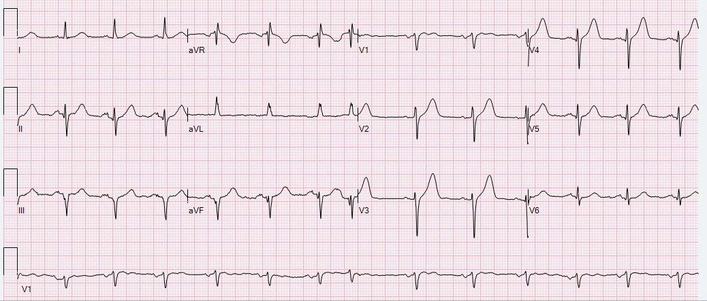
Tôi nhắn bản ghi này cho Dr. Smith mà không kèm thông tin lâm sàng nào, và ông trả lời ngay sau khi xem trên điện thoại: “Chà, đây có thể là một ca tắc LAD rất tinh tế.”
Bác sĩ nội trú năm nhất cũng lo ngại tắc LAD. Vì vậy, anh ấy xem tiếp hồ sơ và tìm thấy điện tâm đồ gần nhất được lưu của bệnh nhân để so sánh:

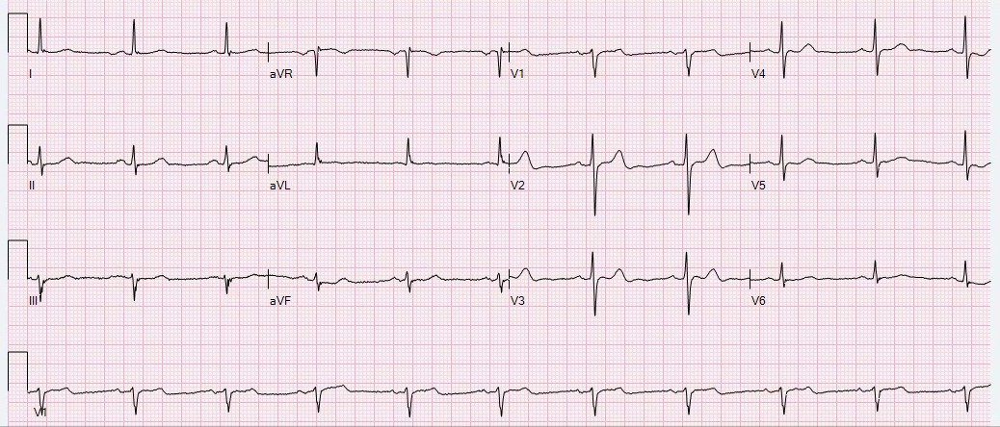
Tuy nhiên, điện tâm đồ “nền” này hóa ra không thực sự là một bản ghi “nền”. Đó là điện tâm đồ cuối cùng trong một loạt điện tâm đồ được ghi cách đây nhiều năm, trong một lần khác bệnh nhân đến viện vì đau ngực. Điện tâm đồ tiếp theo dưới đây là điện tâm đồ đầu tiên của loạt đó. Dựa trên điện tâm đồ dưới đây, bạn nghĩ điều gì đã xảy ra trong lần nhập viện trước đó?

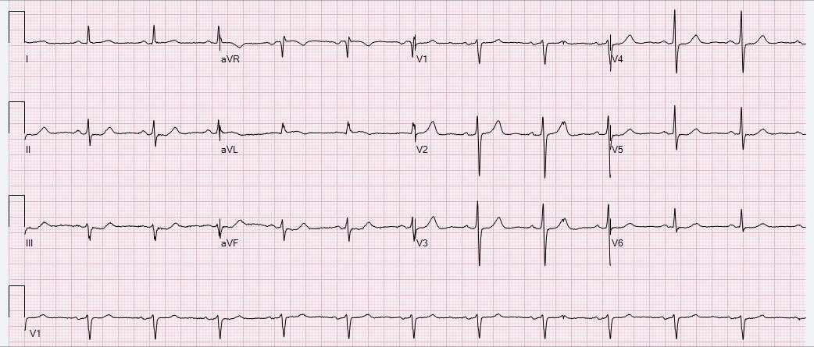
Hãy quay lại ca hiện tại bằng cách xem lại điện tâm đồ lúc nhập viện:
Tổng hợp tất cả lại, khả năng tắc LAD cấp là rất cao.
Dù sao đi nữa, chẩn đoán phân biệt cho điện tâm đồ này phải là biến thể bình thường so với tắc LAD tinh tế. Vì vậy, áp dụng các công thức của Dr. Smith cho tình huống khó này là phù hợp.
Hãy dùng chính blog này, MD Calc, hoặc ứng dụng trên điện thoại thông minh có tên “Subtle STEMI” (hy vọng một lúc nào đó chúng tôi sẽ đổi tên), và xem bạn được kết quả gì. QTc do máy tính đo là 456 ms (kết quả này đúng: QT thô = 397 ms; dùng công thức Bazett, ta chia cho căn bậc hai của khoảng RR (0,76) = 0,87 và được 456). Xem bên dưới để thấy kết quả của tôi:

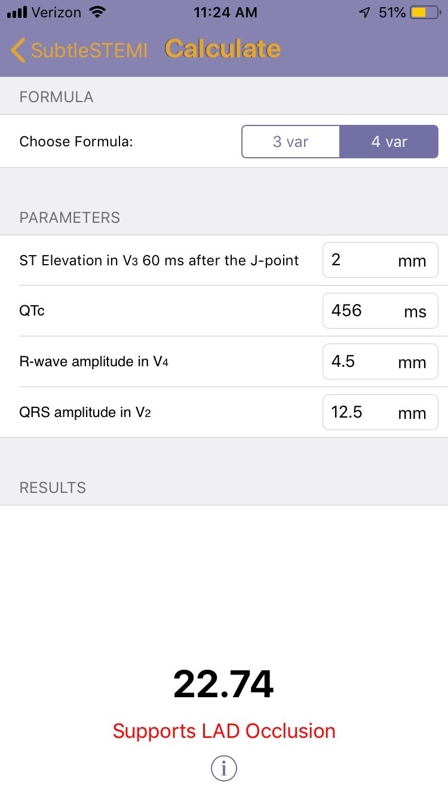

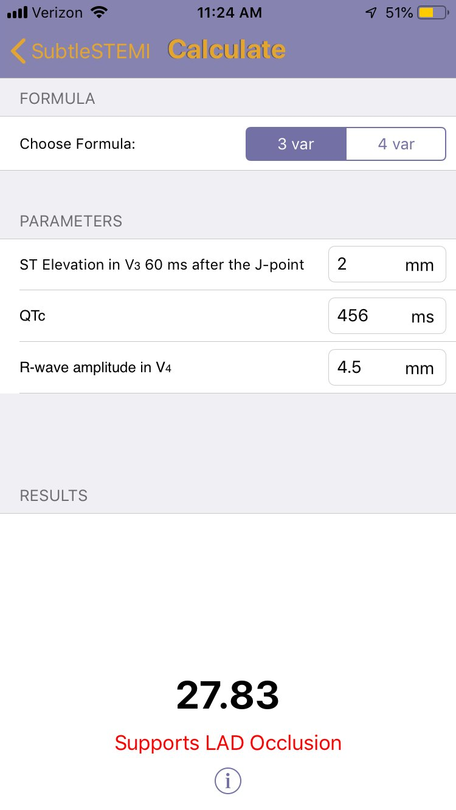
Quay lại ca bệnh:
Bác sĩ lâm sàng lo ngại sóng T tối cấp ở các chuyển đạo trước, ghi nhận “sóng T tối cấp ở V2-V5.” Anh ấy lập tức khám bệnh nhân và thấy một người đàn ông trông khỏe, dấu hiệu sinh tồn bình thường, than đau ngực dai dẳng kéo dài khoảng 2 giờ, khởi phát lúc nghỉ.
Sau khi đã xác nhận nghi ngờ hội chứng vành cấp (ACS) trên lâm sàng, anh ấy báo ngay cho bác sĩ điều trị chính, và họ làm siêu âm tim tại giường, cho thấy rối loạn vận động thành vùng mỏm. Họ có cân nhắc bệnh cơ tim Takotsubo vì phần đáy co bóp tốt, tuy nhiên họ cũng nhận ra rằng LAD cấp máu cho mỏm, nên rối loạn vận động thành (WMA) vùng mỏm cũng phù hợp với nhồi máu cơ tim do tắc. Với sóng T tối cấp ở vùng phân bố của LAD và rối loạn vận động thành vùng mỏm, chẩn đoán là nhồi máu cơ tim do tắc cho đến khi chụp mạch vành cấp cứu chứng minh điều ngược lại.
Họ đã kích hoạt phòng thông tim (trái với khuyến cáo của hướng dẫn ACC/AHA).
Các bác sĩ tim mạch đồng ý với nhận định của khoa cấp cứu, và đến lượt họ cũng ghi nhận “sóng T tối cấp và rối loạn vận động thành trước-mỏm.”
Đây là một điện tâm đồ khác được ghi ngay trước khi chuyển đến phòng thông tim:

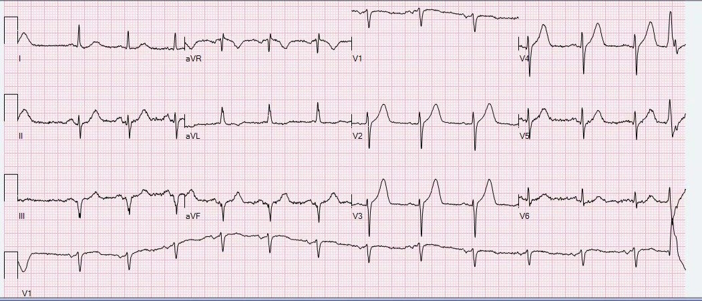

Bệnh nhân nhanh chóng được đưa đến phòng thông tim và được phát hiện tắc hoàn toàn do huyết khối LAD đoạn giữa-xa. Theo tôi thấy, họ phát hiện một tổn thương hẹp 90% ở LAD đoạn gần-giữa, nơi họ cho rằng đã xảy ra nứt vỡ mảng xơ vữa ban đầu, rồi huyết khối trôi xuống hạ lưu đến LAD đoạn giữa-xa và gây tắc hoàn toàn tại đó.
Đây là các hình ảnh liên quan:

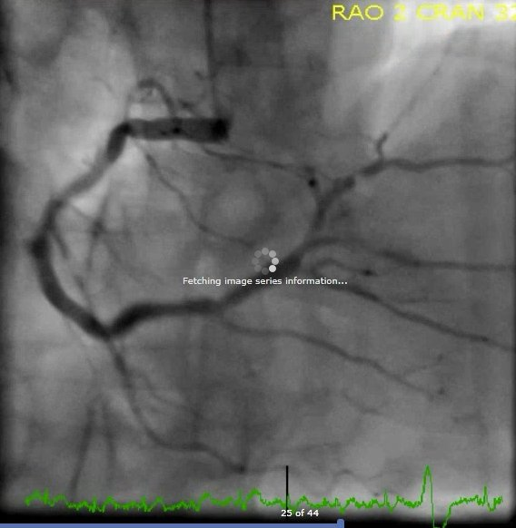

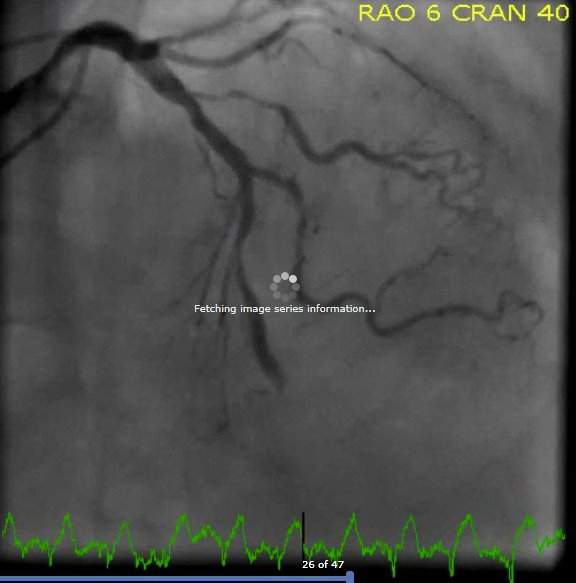

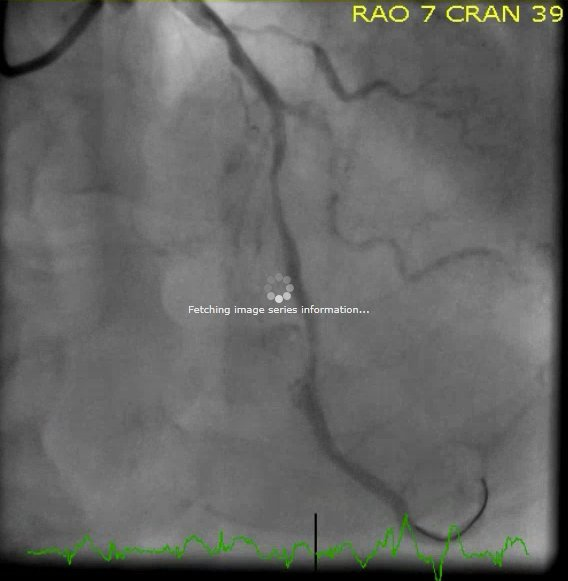

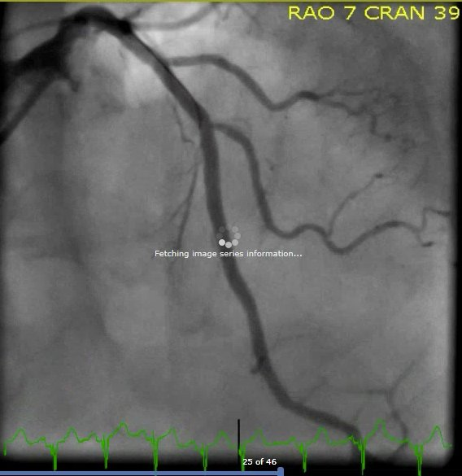

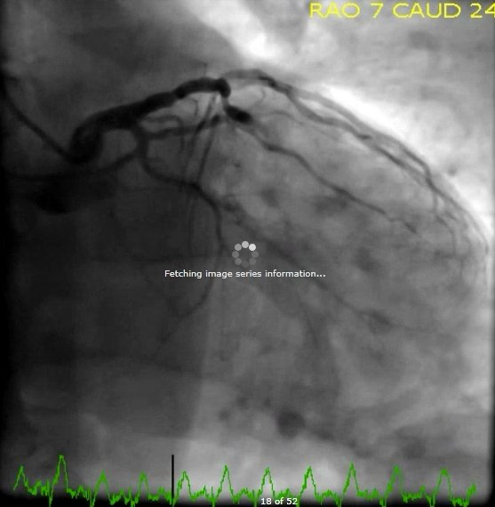

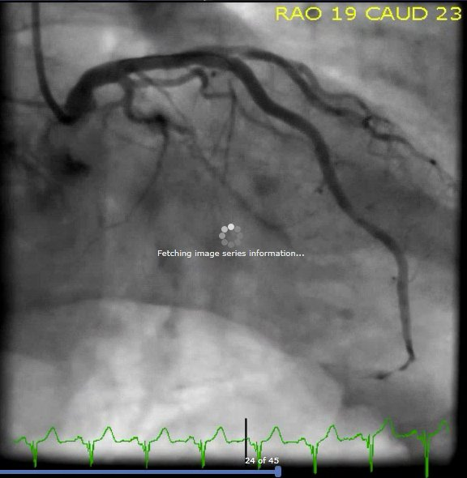
Giả sử bây giờ bạn tiếp nhận bệnh nhân này tại đơn vị chăm sóc mạch vành (CCU). Bạn hy vọng thấy gì trên các điện tâm đồ của bệnh nhân trong vài giờ đến vài ngày tới để yên tâm rằng ông thực sự đã được tái tưới máu và duy trì được tái tưới máu ở mức tế bào?
Trả lời: bạn muốn các điện tâm đồ của ông thể hiện trình tự tái tưới máu được trình bày trong sơ đồ nhồi máu cơ tim do tắc của chúng tôi dưới đây. Bạn muốn các sóng T tối cấp của ông xẹp xuống, rồi từ từ bắt đầu đảo ngược, bắt đầu từ phần cuối của sóng T và tiến dần đến toàn bộ sóng T trong vòng nhiều ngày. Nếu bạn hành động đủ nhanh và tái tưới máu hạ lưu đủ hoàn toàn, bạn thậm chí có thể chứng kiến việc tránh được sóng Q và sự tái lập tăng tiến sóng R bình thường.
Giờ bạn đã biết chính xác điều mình hy vọng sẽ thấy, đây là ba điện tâm đồ liên tiếp của bệnh nhân trong 24-36 giờ sau can thiệp. Hãy hình dung bạn đang chăm sóc ông và xem liệu bạn có tin chắc rằng ông đã được tái tưới máu, hay ông bị tắc lại vào một thời điểm nào đó.

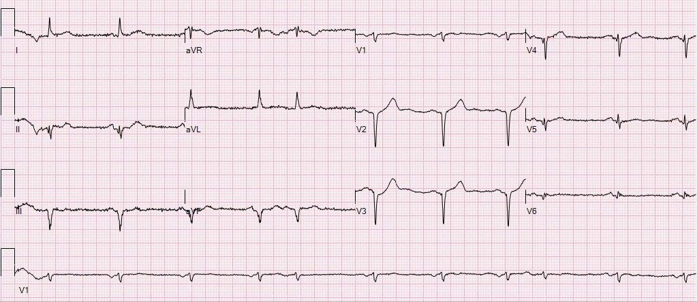

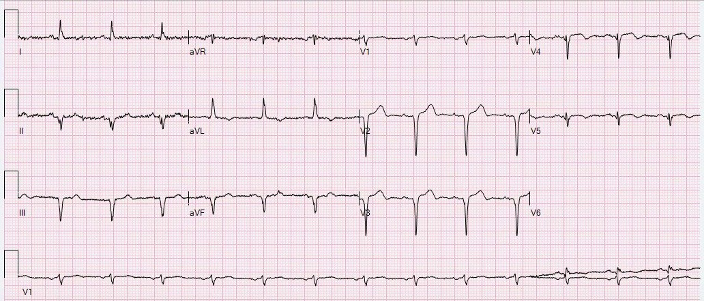
Các điện tâm đồ cho thấy diễn tiến tái tưới máu như mong đợi, không có dấu hiệu nào của tắc lại. Đáng tiếc là có sóng Q và STE tồn tại dai dẳng ở vùng phân bố bị ảnh hưởng. Tuy nhiên, sóng T cho chúng ta biết vùng này thực tế đã được tái tưới máu, dù đã mất đáng kể cơ tim trước khi tái tưới máu.
Phân suất tống máu (EF) vào ngày 2 là 35%, với rối loạn vận động thành tồn tại dai dẳng ở thành dưới, vách trước và toàn bộ mỏm. Troponin T đỉnh là 3,19 ng/mL (mức này khá cao và cho thấy mất cơ tim đáng kể).
Đây là một minh chứng xuất sắc về việc các chuyên gia khoa cấp cứu và tim mạch phối hợp với nhau và đưa ra quyết định đúng, ngay cả khi các hướng dẫn của chúng ta gợi ý khác đi. Tôi tin rằng mức độ kỹ năng này chỉ đạt được ở một tỷ lệ rất nhỏ các ca trên khắp thế giới vào năm 2018, và các nhóm cấp cứu và tim mạch này đáng được khen ngợi vì ca bệnh này. Tôi rất mừng vì không phải kể câu chuyện của ca này dưới góc nhìn của một ca tắc mạch bị bỏ sót, như khoảng 25% tổng số ca nhồi máu cơ tim do tắc vào năm 2018.
Những điểm cần học:
Đây là một ca NSTEMI cần đến phòng thông tim ngay lập tức, hay còn gọi là nhồi máu cơ tim do tắc (OMI).
Câu chuyện thường gặp là thế này: bệnh nhân KHÔNG được tái tưới máu cấp cứu. Các xét nghiệm troponin liên tiếp dương tính, NSTEMI được chẩn đoán và bệnh nhân được chụp mạch vành vào ngày hôm sau (trừ khi ông tiến triển sốc tim, điều rất có thể xảy ra) và được can thiệp.
Có một số người phản bác rằng không có bằng chứng cho thấy điều trị tái tưới máu cấp cứu cho NSTEMI mang lại kết cục tốt hơn so với chụp mạch vành vào ngày hôm sau.
Tuy nhiên, điều này là sai. Thứ nhất, phần lớn các nghiên cứu về chụp mạch vành cấp cứu thực sự ĐỀU cho thấy lợi ích. Thứ hai, không nghiên cứu nào tuyển những bệnh nhân ĐÃ BIẾT là tắc cấp, và thứ ba, tất cả đều loại trừ những bệnh nhân còn triệu chứng đang diễn ra.
Nếu bạn biết một bệnh nhân bị tắc hoàn toàn do huyết khối, cấp tính và có triệu chứng ở LAD đoạn giữa (hoặc bất kỳ động mạch nào) mà không có đủ tuần hoàn bàng hệ (như ở ca này), thì sẽ là phi đạo đức nếu phân ngẫu nhiên người đó vào một thử nghiệm trong đó các ca “NSTEMI” được thông tim ngay lập tức hoặc trì hoãn.
Sóng T tối cấp rất khó nhận ra, và bạn phải được huấn luyện chuyên biệt cho nhiệm vụ này.
Hãy dùng các công thức khi chúng áp dụng được và hiểu rõ giới hạn của chúng.
Hãy dạy người khác bằng các bài blog này. Thật đáng công khi nhìn họ tiến bộ và giúp đỡ bệnh nhân.

———————————————————–
Bình luận của KEN GRAUER, MD (18/11/2018):
———————————————————–
Thêm một ca bệnh được minh họa và thuật lại tuyệt vời của Drs. Meyers & Smith (xin cảm ơn Dr. Max Macbarb đã gửi ca bệnh này!) — cho thấy diễn tiến liên tiếp trên điện tâm đồ của OMI cấp (Occlusion-related Myocardial Infarction — nhồi máu cơ tim liên quan đến tắc mạch) với bằng chứng không thể chối cãi biện minh cho việc thông tim ngay lập tức dù không đáp ứng “tiêu chuẩn STEMI” thông thường.
- Tôi tập trung bình luận vào một số điểm giảng dạy bổ sung liên quan đến 2 điện tâm đồ đầu tiên trong ca này (Hình 1).
- LƯU Ý — Tôi xin nhấn mạnh trước rằng các bình luận dưới đây của tôi liên quan đến những khái niệm nâng cao trong đọc điện tâm đồ, vượt ra ngoài phần cốt lõi!

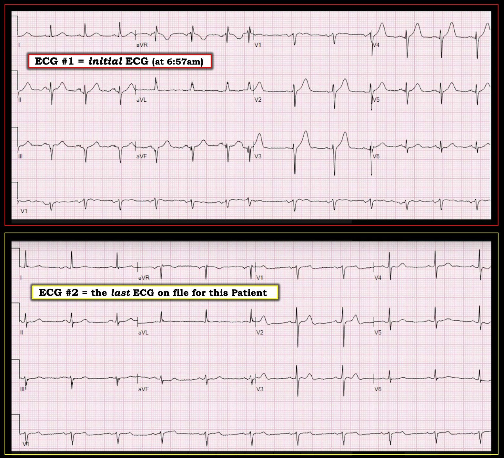
==========================
Điện tâm đồ #1: ( = Bản ghi ban đầu tại khoa cấp cứu lúc 6:57 sáng):
Như Dr. Meyers đã nhấn mạnh, xét theo bệnh sử (tức là một người đàn ông 71 tuổi có tiền sử CAD, đến viện vì đau ngực mới khởi phát) — điện tâm đồ ban đầu lúc nhập viện (tức là điện tâm đồ #1) cung cấp bằng chứng xác đáng ủng hộ nhu cầu thông tim cấp cho đến khi chứng minh được điều ngược lại!
- Mặc dù điện tâm đồ #1 không có đủ ST chênh lên để được xếp là “STEMI” — mối lo ngại hiển nhiên là khả năng tắc LAD cấp. Điểm cần nhấn mạnh là việc có hay không có “tiêu chuẩn STEMI” không quan trọng — vì dù thế nào đi nữa, các thay đổi tối cấp không thể chối cãi thấy ở đây cho thấy OMI cấp cho đến khi có bằng chứng ngược lại.
Ở một bệnh nhân có tiền sử bệnh mạch vành đã được ghi nhận — có nhiều bất thường tinh tế trên Điện tâm đồ #1. Bao gồm:
- Nhịp là nhịp xoang kèm một PAC ( = nhát thứ 7).
- Có Nhiễu đường nền (baseline artifact). Quá thường xuyên, tôi không thấy dấu hiệu này được nhắc đến trong phần diễn giải của ngay cả những bác sĩ lâm sàng giỏi. Điều quan trọng là phải nhận biết nhiễu đường nền — vì nó giải thích tại sao sóng ST-T của các nhát liên tiếp trên chuyển đạo V1 dài (ở cuối điện tâm đồ #1) liên tục thay đổi. Ví dụ — thực sự có một ít ST chênh lên ở phức bộ QRS thứ 1 trong chuyển đạo II — nhưng thực ra không có ở 2 phức bộ QRS còn lại trong chuyển đạo này. Những khác biệt tinh tế tương tự cũng thấy ở 3 phức bộ trong chuyển đạo aVF. Khi gặp nhiễu đường nền làm thay đổi hình dạng sóng ST-T — tôi ưu tiên dùng cách nhìn “tổng thể (Gestalt)”, tìm “chủ đề” của sóng ST-T ở tất cả các nhát trong tất cả các chuyển đạo thuộc một vùng chuyển đạo nhất định. Dùng cách tiếp cận này — tôi tin rằng “chủ đề” khi đánh giá sóng ST-T ở 3 chuyển đạo thành dưới (II,III,aVF) trên điện tâm đồ #1 — là cao-hơn-và-đầy-hơn-mức-đáng-có so với chiều cao sóng R ở các chuyển đạo này. Do đó, ngoài các thay đổi tối cấp ở chuyển đạo ngực — còn có sóng T tối cấp ở mỗi chuyển đạo thành dưới trên điện tâm đồ #1.
- LAHB (= Left Anterior HemiBlock — blốc phân nhánh trái trước) có mặt. Điện tâm đồ #1 đáp ứng tiêu chuẩn LAHB — vì phức bộ QRS ở mỗi chuyển đạo thành dưới rõ ràng âm nhiều hơn dương (tức là, trục mặt phẳng trán rõ ràng âm hơn -30 độ). LƯU Ý — Tiêu chuẩn LAHB không được đáp ứng ở điện tâm đồ gần nhất trong hồ sơ của bệnh nhân này (tức là, = điện tâm đồ #2) — vì phức bộ QRS ở chuyển đạo II của điện tâm đồ #2 không âm nhiều hơn dương (nghĩa là trục mặt phẳng trán khi đó chưa tới -30 độ!). Do đó — sự xuất hiện LAHB là một dấu hiệu mới ở bệnh nhân này!
- Có sóng Q thành dưới trên điện tâm đồ #1 — mà theo Dr. Meyers, gợi ý nhồi máu thành dưới cũ. Dấu hiệu này đáng được bình luận thêm — vì hình dạng sóng Q ở mỗi chuyển đạo thành dưới trên điện tâm đồ #1 thậm chí còn gợi ý nhồi máu thành dưới cũ mạnh hơn so với sóng Q thành dưới “đơn thuần” (vốn thường không có giá trị khẳng định nhồi máu cơ tim cũ). Ý tôi là, phức bộ QRS ở chuyển đạo III không chỉ âm hoàn toàn (tức là, một phức bộ QS) — mà sườn xuống của sóng S ở chuyển đạo III còn rõ ràng bị chậm (tức là, nó không thẳng, như thường thấy ở một sóng Q “đơn thuần”). Bất thường hơn nữa — là phức bộ qrS mà chúng ta thấy ở 2 trong 3 phức bộ của chuyển đạo aVF. Việc thấy một sóng q nhỏ ban đầu, tiếp theo là một sóng r nhỏ, rồi chuyển thành sóng s chiếm ưu thế ở một hoặc nhiều chuyển đạo thành dưới gợi ý 2 điều: i) gần như chắc chắn đã từng có nhồi máu thành dưới trước đó; và, ii) ngoài nhồi máu thành dưới cũ — còn có LAHB.
- HÃY NHỚ — Do các vectơ khởi đầu ngược hướng nhau — nhồi máu cơ tim thành dưới có thể “che lấp” việc nhận ra LAHB — và ngược lại. Dấu hiệu mà tôi thấy hữu ích nhất để nhận ra sự hiện diện của cả nhồi máu cơ tim thành dưới cũ lẫn LAHB là sự phân mảnh của phức bộ QRS ở một hoặc nhiều chuyển đạo thành dưới, đặc biệt khi có dạng qrS (như chúng ta thấy ở đây tại chuyển đạo aVF). Điều này thực sự có liên quan trong ca này — vì sự hiện diện của LAHB mới trên điện tâm đồ #1 (so với bản ghi gần nhất trước đó trong hồ sơ = điện tâm đồ #2) — cung cấp thêm một dấu hiệu đáng lo ngại ở bệnh nhân bị nghi tắc LAD cấp mới này.
- Ngoài các điểm số cao theo công thức 3 biến và 4 biến mà Dr. Meyers nhấn mạnh — tôi ưu tiên đánh giá định tính sóng ST-T về HÌNH DẠNG khi đánh giá khả năng có thay đổi tối cấp. Sóng T ở chuyển đạo ngực cao-hơn-và-phình-to-ở-đỉnh-hơn-mức-đáng-có ở không dưới 4 chuyển đạo ngực (tức là, ở các chuyển đạo V2 đến V5). Tôi thích “rút ra” hai trong số các thông số của các công thức để dùng trong đánh giá định tính của mình = i) Tăng tiến sóng R; và, ii) QTc dài ra tương đối. Trên điện tâm đồ #1 — có mất sóng R (theo Dr. Meyers, chiều cao sóng r ở V3 thấp hơn so với ở chuyển đạo V2, ngược với điều được mong đợi). Thực tế, vùng chuyển tiếp (nơi sóng R trở nên cao hơn sóng S) mãi đến giữa V5-V6 mới xuất hiện trên điện tâm đồ #1, trong khi bình thường nó phải xuất hiện trước chuyển đạo V5. Và, theo Dr. Meyers, QTc đo bằng máy tính = 456 msec trên điện tâm đồ #1 — rõ ràng là kéo dài (trong khi các biến thể tái cực sớm có ST chênh lên thường có giá trị QTc tương đối ngắn).
- Ủng hộ cho nhận định rằng thực sự có mất sóng r có ý nghĩa (tức là, không chỉ đơn giản do đặt sai vị trí điện cực), và tăng tiến sóng R kém có ý nghĩa — là việc phát hiện các sóng q rất nhỏ-nhưng-có-thật ở chuyển đạo V4, V5 và V6 của điện tâm đồ #1. Mặc dù “sóng q vách bình thường” thường có thể thấy ở một hoặc nhiều chuyển đạo bên — bình thường chúng không nên xuất hiện lan sang tận chuyển đạo V4 khi sóng r ở V4 nhỏ như ở đây so với độ sâu của sóng S ở chuyển đạo này. Dấu hiệu sóng Q mới ở chuyển đạo ngực này sau đó đã được xác nhận bởi các bản ghi sau can thiệp trong ca này.
==========================
Bình luận về điện tâm đồ #2 — Dr. Meyers nhấn mạnh tầm quan trọng của việc đánh giá bối cảnh lâm sàng mà trong đó các bản ghi dùng để so sánh được ghi lại. Do đó, trong ca này — điện tâm đồ #2, là điện tâm đồ gần nhất trong hồ sơ của bệnh nhân này — không thực sự là một điện tâm đồ “nền” của bệnh nhân, vì nó thuộc một loạt bản ghi được ghi trong một biến cố cấp trước đó. Tuy vậy — việc đánh giá điện tâm đồ #2 củng cố nhận định của chúng tôi rằng OMI cấp đang diễn ra trên điện tâm đồ #1. Chúng ta hãy một lần nữa so sánh các thay đổi giữa điện tâm đồ #1 và điện tâm đồ #2 trong Hình 1:
- Có LAHB mới và các sóng q phân mảnh mới ở các chuyển đạo thành dưới trên điện tâm đồ #1 mà trước đây không thấy.
- Có sóng T tối cấp mới ở cả các chuyển đạo thành dưới, cũng như ở hầu hết các chuyển đạo ngực.
- QTc đã dài ra trên điện tâm đồ #1 so với điện tâm đồ gần nhất trong hồ sơ của bệnh nhân này.
- Hiện có mất sóng r từ V2 sang V3, tăng tiến sóng r kém với vùng chuyển tiếp muộn — và các sóng q mới-nhưng-có-thật ở chuyển đạo V4, V5 và V6.
- Cuối cùng — bệnh nhân này với bệnh động mạch vành (CAD) đã biết nay đến khám vì đau ngực mới khởi phát. Do đó — điện tâm đồ #1 cần được diễn giải là OMI cấp cho đến khi được chứng minh ngược lại!
Chúng tôi xin CẢM ƠN một lần nữa Drs. Macbarb, Meyers & Smith vì ca bệnh tuyệt vời này!